Season 53 (2018-2019)
-
 September 9, 2018Directed by William A. Wellman; Starring Henry Fonda, Dana Andrews, Mary Beth Hughes, Anthony Quinn
September 9, 2018Directed by William A. Wellman; Starring Henry Fonda, Dana Andrews, Mary Beth Hughes, Anthony Quinn
The Ox-Bow Incident

USA, 1943, 75 min, B&W, Not Rated
The story of intolerance and mob mentality is more relevant today than it was in the old west. This is a grim picture, but works to provide a chilling example of subtle evil using powerful dramatics throughout. Gil (Fonda) is a drifter futilely trying to secure normality as he returns to claim a lost loved one. He's been caught up in a standoff over murder and angry accusations. Men's lives are on the line as a lynch mob forms. There are exciting tension-packed moments, but the film keeps to a meditative mood, delivering a strong message on the unpredictability of violence and the need to act with logic, not mindless aggression.
Film Notes: More than 75 years since its release, William A. Wellman's The Ox-Bow Incident persists as one of the finest "social problem" films of its era or any era.
The setup couldn't be simpler. Two drifters played by Henry Fonda and Art Croft ride into town and enter a saloon where they quickly learn that a local rancher has been murdered by suspected cattle rustlers. A posse forms to hunt down the murderer or murderers and soon finds three men with what are presumed to be stolen cattle. A battle of wills ensues over what should be done with the suspects – should they be lynched on site or taken back to town to stand trial?
The Ox-Bow Incident offers no heroes. Though Fonda is clearly the character we're most meant to identify with, he's ultimately powerless – or unwilling – to do what it takes to see true justice carried out. In truth, Fonda's casting in the role is a stroke of genius. Fresh off his performances as Abe Lincoln and Tom Joad, here he is portrayed as a principled but weak man. It would be his last role before enlisting in the Navy to fight in World War II, and though he would return to heroism as Wyatt Earp in My Darling Clementine (1946) upon his return, Fonda would come to regard The Ox-Bow Incident and his performance among his favorites. The rest of the film's casting is equally strong, most notably the supporting performances by Dana Andrews and Anthony Quinn as two of the suspected murderers.
Wellman, one of the great workhorse directors of the silent and early sound era, was no stranger to films with a social conscience, having directed Wild Boys of the Road and Heroes for Sale for Warner Bros. during the Depression. He was the driving force behind the film's production and proposed the film to 20th Century Fox studio chief Darryl F. Zanuck after reading and loving the book on which it was based. Wellman's direct, no-nonsense approach to the story marries perfectly with the dark subject matter, and at a mere 75 minutes the story moves relentlessly to its grim conclusion.
Seen today, The Ox-Bow Incident remains a searing indictment of mob violence, one that continues to resonate as a cautionary tale and a warning of the dangers of a justice system where "guilty until proven innocent" is the prevailing sentiment. (MVH) -
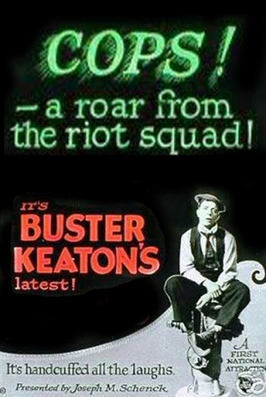
also showing September 9, 2018Directed by Eddie Cline, Buster Keaton; Starring Buster Keaton, Eddie Cline, Virginia Fox
Cops
*
USA, 1922, 18 min, B&W, Not Rated, Silent w/intertitles
Hailed as perhaps Buster Keaton's greatest two-reel comedy, Cops sees our intrepid Buster trying to woo the girl of his dreams (of course) by becoming a successful businessman. Chaos ensues when he instead finds himself on the run from an army of policemen after getting into scraps with several local officers. Shot during the Fatty Arbuckle rape-and-murder trial and filled with Keaton's trademark escalation of gags and stunts, Cops is a marvel of construction and one of his most cherished classics.
Read Roger Ebert's review of Cops at Great Movies. *The YouTube clip is not a trailer, but an episode of Every Frame a Painting called "Buster Keaton–The Art of the Gag". Check it out - it's only ~8.5 minutes! -
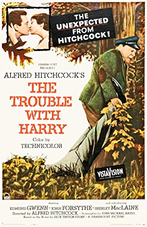
October 14, 2018Directed by Alfred Hitchcock; Starring Edmund Gwenn, John Forsythe, Mildred Natwick, Mildred Dunnock
The Trouble with Harry
USA, 1955, 99 min, Color, PG
The trouble with Harry is that he is dead, and everyone seems to have a different idea of how he died, what their own culpability is, and what should be done with the body. Harry is buried and exhumed several times by various parties, and let's just say that it gets complicated. This character piece is a quirky take on "whodunits" and introduces both Shirley MacLaine and Jerry Mathers (aka Beaver Cleaver). Light comedy and dark humor easily coexist in the Technicolor glories of a New England autumn.
Film Notes: "Nothing amuses me as much as understatement." - Alfred Hitchcock to Francois Truffaut, Hitchcock/Truffaut.
Harry Worp is about to cause a lot of trouble for the residents of a small Vermont town. The trouble with Harry is that he's dead, and there are way too many people who think that they may be responsible for Harry's demise.
It's a gorgeous fall day in rural Vermont. Three shots ring out over the autumnal hills. A small boy with a toy gun discovers a dead body and runs home to tell his mother. Several townspeople discover the body in turn: an absent-minded physician steps over the body without noticing, a vagrant steals Harry's shoes, and an artist sketches him. The mood is of utter nonchalance in the unexpected presence of a dead body out in the middle of nowhere, and the plot turns not so much on whodunit as it does on what to do with this inconvenient corpse.
The Trouble with Harry is one of Hitchcock's more surreal and subversive films. The Master of Suspense included very little actual suspense in this film, and when it occurs, it's presented as the suspense of avoiding social embarrassment rather than evading danger. These are nice, likable people who conspire in a cold-blood fashion to get themselves out of a spot of trouble.
Hitchcock had two earlier films that revolved around disposal of a body. In Rope, the murderers have to remove a body secreted in an antique chest. In Rear Window, the murderer has dismembered the victim to remove the corpse from an apartment. These are dark and gruesome situations. Here, the Vermonters use good old-fashioned Yankee ingenuity to address the issue. They work communally, pool their efforts and resources, and try to figure out the best way to rid themselves of the unfortunately deceased Harry. And they do so on the sunny, autumnal slopes of New England in a landscape devoid of shadows.
The Trouble with Harry is suffused with Americana – the brilliant colors of a New England autumn, the quirky small-town characters, visions of hearth and home – yet at its core, it celebrates Hitchcock's understated British sense of humor. The cast presents Shirley McLaine in her first screen role, includes John Forsythe and introduces Jerry Mathers, two years before they both found fame on television - Forsythe in Bachelor Father and Mathers in Leave It to Beaver.
In Hitchcock/Truffaut, Hitchcock said that "With Harry I took melodrama out of the pitch-black night and brought it out into the sunshine. It's as if I had set up a murder alongside a rustling brook and spilled a drop of blood into the clear water. These contrasts establish a counterpart; they elevate the commonplace in life to a higher level." Although it was a financial flop in 1955, The Trouble with Harry was one of Hitchcock's personal favorites. This quirky, surreal black comedy has found new respect and gained an audience. (KB) -
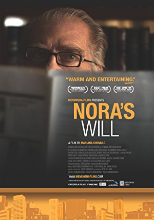
November 11, 2018Directed by Mariana Chenillo; Starring Fernando Luján, Enrique Arreola, Ari Brickman, Juan Carlos Colombo
Nora's Will
Mexico, 2008, 92 min, Color, Not Rated, Spanish w/subtitles
Nora is discovered dead on her bed by her ex-husband José. He also discovers a refrigerator full of beautifully prepared dishes - all for the impending Passover seder…the hallmarks of a labor of love. But José sees it as evidence of manipulation. The timing of Nora's death at the beginning of Passover necessitates a delay in burying her. She's put on ice and left in her bedroom until a burial can proceed five days hence. José is an atheist and impatient with the dictates of ceremonial rules. This is a gently-paced movie, sweet-natured with a dry sense of humor and a growing cast of characters including Nora's psychiatrist, her mournful cat, a rabbi, and José's wife and children.
Film Notes: José divorced his wife, Nora, years ago, but lives in an apartment building right across from her. One day, he arrives at Nora's apartment with frozen meat packages that the delivery man sent him because she's not at home. José does not know that Nora lies dead in her bed until he checks the bedroom. Seems she committed suicide by swallowing lots of sleeping pills. The process to bury her is complicated. Nora is Jewish and Nora's body can only be buried on Sunday, two days later, because the day before is the Sabbath and Friday evening is the first night of Passover. Jewish law requires to bury her within 24 hours of her death.
Chaos ensues when José learns that Nora prepared a Passover dinner with everything properly labeled in the refrigerator. Soon relatives arrive but, without Nora, it's not going to be a typical Seder.
Writer/director Mariana Chenillo blends tragedy, drama and comedy with a light touch. Just when you think the plot will delve more into comedy, it turns around and moves back to tragic elements but without dwelling on them. Suspense is added when José discovers new information about Nora.
You'll find many interesting characters and surprises in store so that the film manages to be a quietly engrossing, funny and thought-provoking tragicomedy boasting many lively personalities. (RW) -
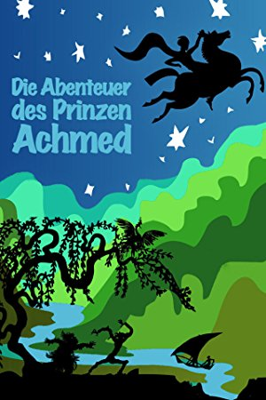
December 9, 2018Directed by Lotte Reiniger, Carl Koch
The Adventures of Prince Achmed (Die Abenteuer des Prinzen Achmed)
Germany, 1926, 81 min, Animated, Not Rated, Silent w/intertitles
Prince Achmed accidentally trades his sister to a wicked magician for a flying horse, which takes him to the island of Wak-Wak, where he falls in love with a bird princess named Pari Bann. When demons steal Pari Bann away from Achmed, he turns to Aladdin's magic lantern for help. The film is considered the first animated feature film. This enormously enjoyable fantasy film maintains interest from beginning to end simply from the inventiveness of its ground-breaking animation.
-
also showing December 9, 2018Directed by Anthony Lucas; Starring Joel Edgerton, Helmut Bakaitis, Tommy Dysart, Jude Beaumont
The Mysterious Geographic Explorations of Jasper Morello
Australia, 2005, 26 min, Animated, Not Rated -
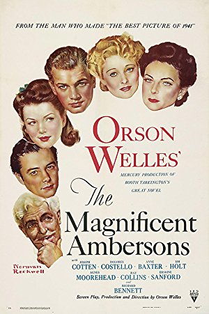
January 13, 2019Directed by Orson Welles, Fred Fleck, Robert Wise; Starring Joseph Cotten, Dolores Costello, Anne Baxter, Tim Holt
The Magnificent Ambersons
USA, 1942, 88 min, B&W, Not Rated
This is an ancient story, yet forever a timely one. It captures the crumbling facade of the turn of the twentieth century as the old lifestyle surrendered to the new. Isabel Amberson (Costello) is courted by Eugene Morgan (Cotton), but he is rebuffed on account of his whimsical happenstance. She marries Wilbur Manifer instead, and their son, George, is terribly over-indulged. Twenty years later, the spoiled and entitled George returns home, his visit coinciding both with his father's death and Eugene's return to court his mother.
-
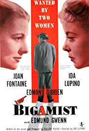
February 10, 2019Directed by Ida Lupino; Starring Joan Fontaine, Ida Lupino, Edmund Gwenn
The Bigamist
USA, 1953, 80 min, B&W, Not Rated
The Bigamist has noir overtones. The noir element is of entrapment through moral weakness. O'Brien is a lonely traveling salesman in LA when he meets Lupino, a young waitress on a Hollywood bus tour. A relationship develops and one thing leads to another, but not before O'Brian tries to extricate himself. He has a wife in Frisco. O'Brien, who is morally weak, digs himself deeper into a bind that cannot be broken without tragic consequences. The script is soft on the bigamist, although he is punished. However, there is maturity and sensitivity in a scenario where decent people get themselves into a mess simply because of normal human frailties. The strength of the film is in the lead performances and the screenplay which sensitively deals with extra-marital sex and single motherhood.
-
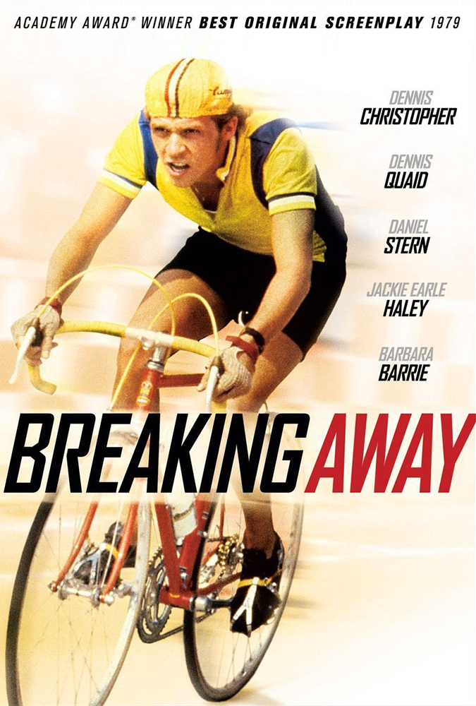
March 10, 2019Directed by Peter Yates; Starring Dennis Christopher, Dennis Quaid, Daniel Stern, Jackie Earle Haley
Breaking Away
USA, 1979, 101 min, Color, PG
Dave (Dennis Christopher) is fresh out of high school and concentrating on his impressive bicycle racing skills. Dave is on an "Italy" kick, talking with an accent and embracing the Italian way of life. Friends Mike, Cyril, and Moocher are adrift in the same boat as Dave, but Dave is a compassionate guy who dreams of something different. The film builds to the big competition: the local kids against the university jocks. There's the prevailing sense that the friends will soon drift away. The film is a paean to the dying embers of youth and the promise of what lies ahead.
-
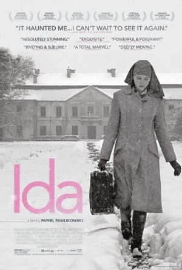
April 4, 2019Directed by Pawel Pawlikowski; Starring Agata Kulesza, Agata Trzebuchowska, Dawid Ogrodnik, Jerzy Trela
Ida
Poland, 2013, 82 min, B&W, PG-13, Polish w/subtitles
Ida is a novice nun preparing take her vows of chastity. She feels entirely ready but her prioress insists she spend some time in the "real world". Ida is instructed to visit her sister, Wanda Gruz. During this visit she learns her birth parents were Jewish, and were killed during World War II. Ida wants to dig deeper. In this Oscar-winning film, Ida is exposed to a variety of secular behaviors which she has been shielded from in the convent. Wanda smokes, drinks, and indulges in casual sex. She's a troubled woman who wears her feelings on her sleeve as consistently as Ida buries hers. The final act details the emotional fallout both characters experience in the wake of their discovery.
-
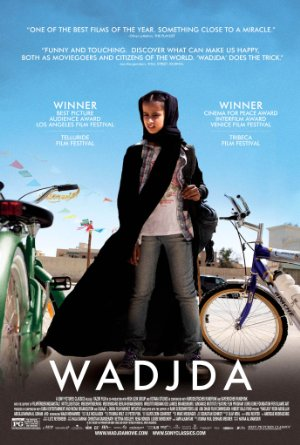
May 12, 2019Directed by Haifaa Al-Mansour; Starring Reem Abdullah, Waad Mohammed, Abdullrahman Al Gohani, Ahd
Wadjda
Saudi Arabia, 2012, 98 min, Color, PG, Arabic w/subtitles
Wadjda is the first feature film from Saudi Arabia and, equally important, directed by a woman. The film tells of Wadjda growing up in Riyadh and learning the dos and don'ts of being a young girl in a male-controlled Muslim culture. Wadjda admires the bicycle that her friend Abdulla rides. She wants one of her own and embarks on a quest to pay for the bike. She signs up for the school's competition on the teachings of the Koran so that she may win the cash prize. The film's multi-generational story plays like a dedication to the spirit of women of the Kingdom.
-
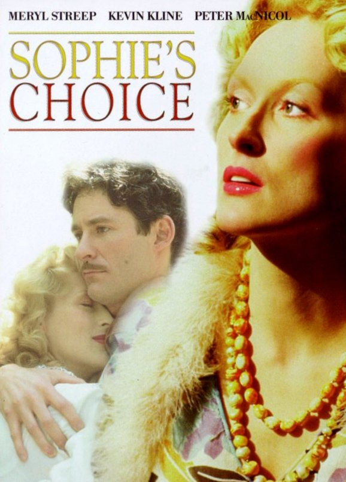
June 9, 2019Directed by Alan J. Pakula; Starring Meryl Streep, Kevin Kline, Peter MacNicol, Rita Karin
Sophie's Choice
USA, 1982, 150 min, Color, R
On his first night at a Brooklyn boarding house, Stingo witnesses a drunken Nathan berating Sophie in a stairwell. He notices a number tattooed on her arm. Nathan hurls insults at Stingo before huffing off, leaving Stingo to comfort Sophie. The next morning Nathan invites Stingo to a picnic as an apology for his behavior. The trio become good friends. The second half of the film switches gears to depict Sophie's time at Auschwitz and her work as a Nazi officer's servant. This backstory brings us full circle as Sophie's past life explodes in the stories of Nathan and Stingo. Few films have handled gut-punching tragedy, romantic melodrama, and intermittent comedy so skillfully.
-
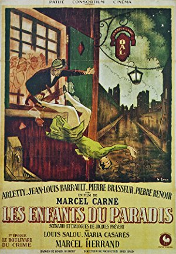
July 14, 2019Directed by Marcel Carné; Starring Arletty, Jean-Louis Barrault, Pierre Brasseur, Pierre Renoir
Children of Paradise (Les Enfants du Paradis)
France, 1945, 189 min, B&W, Not Rated, French w/subtitles
Against a backdrop of 19th century Parisian theater life, a great beauty has a lasting effect on the lives of four disparate men: a brilliant mime, who falls debilitatingly in love with her, rendering him unable to accept the love of his own admirer; a womanizing Shakespearean actor, who briefly shacks up with her in a somewhat passionless affair; a rich and powerful count, who saves her from a spurious criminal charge, and subsequently takes her to see the world; and a flamboyant criminal whose mischievous meddling brings to a head all of their various entanglements. The epic sweep of Carné's film is often intoxicating and filled with plenty of enjoyable and engaging moments that are wonderfully entertaining.
Read Roger Ebert's review of Children of Paradise at Great Movies. -
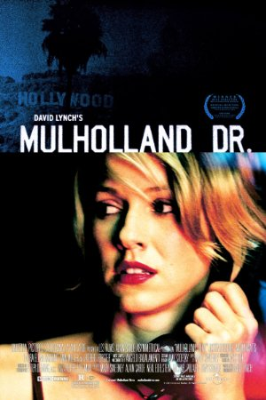
August 11, 2019Directed by David Lynch; Starring Naomi Watts, Jeanne Bates, Dan Birnbaum, Laura Harring
Mulholland Drive
France/USA, 2001, 147 min, Color, R
This film throws away any notion of traditional linear storytelling. It's Hollywood, and a wide-eyed blonde, Betty (Watts), has arrived at her aunt's place to find a mysterious brunette, Rita (Harring), who was in a car accident and lost her memory. Betty endeavors to aid Rita, putting them on a path where dreams and reality collide. Their story interacts with a film director who was strong-armed into hiring an actress for the lead role of his film. However, his connection to the two women may run deeper. This film is sexy, dark, and exotic, with an unpredictable plot twist that forces you to reinterpret what you've seen. What is reality? That's for you to decide.
Read Roger Ebert's review of Mulholland Drive at Great Movies.